السلسلة 69
السيارة (صنف B) · 40 سؤال. كل سؤال فيه الصورة والصوت. اختار الجواب (ولا جوج إلا كانو صحاح)، ورك على «تأكيد» باش تشوف واش صبتي.
- 40سؤال
- 32باش تنجح
- 1 – 4جواب واحد ولا أكثر
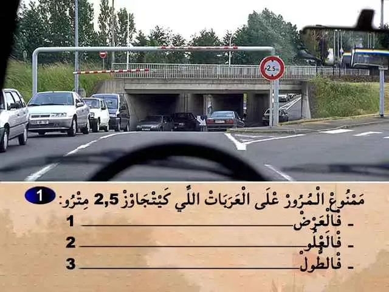
الكلافيي: 1–4 للجواب، Enter للتأكيد وللسؤال الجاي.
السلسلة 69 · النتيجة ديالك
0 / 40
السلسلة 69
السيارة (صنف B) · 40 سؤال، بالصوت، مع الجواب الصحيح والشرح.
السؤال 1
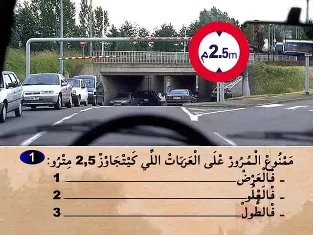
بيّن الجواب
الجواب الصحيح: 2
هاد العلامة كتقول باللي ممنوع على الطوموبيلات اللي العلو ديالها كيتعدى 2.5 متر يدخلوا.
السؤال 2
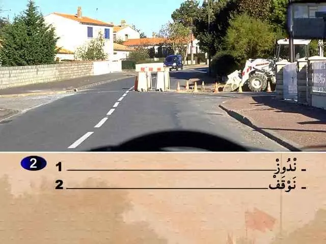
بيّن الجواب
الجواب الصحيح: 2
الطريق اللي كنمشي فيها فيها اشغال، والطريق التانية ديال الجهة المعاكسة كاينة طوموبيل جاية خاصني نوقف حتى دوز عاد يمكنلي نكمل حيت هي لي عندها الاسبقية لانه المسلك ديالها.
السؤال 3
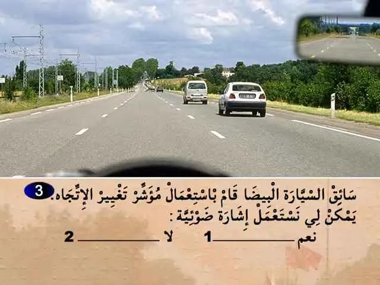
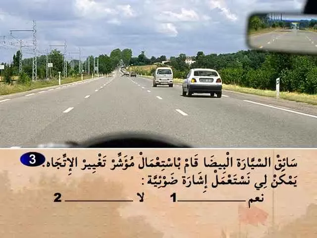
بيّن الجواب
الجواب الصحيح: 1
الطوموبيل البيضة كاينة فالمسلك العادي وأنا فمسلك التجاوز، لكن سائق الطوموبيل البيضة بغا يتجاوز، خاصني نبهو حيت أنا بديت عملية التجاوز.
السؤال 4
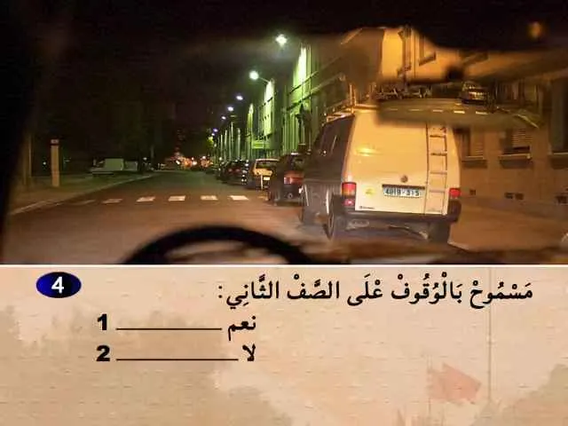
بيّن الجواب
الجواب الصحيح: 1
مكن لي نوقف على الصف الثاني باش نزل شي راكب بلا ما نعرقل السير، يمكن نوقف خصوصا انه الطريق خاوية.
السؤال 5
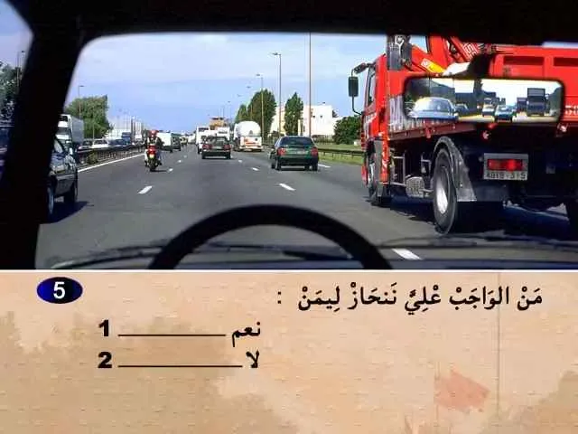
بيّن الجواب
الجواب الصحيح: 2
فحالة الزحام، خاصني نبقى فالمسلك اللي أنا فيه وما نبدلش.
السؤال 6
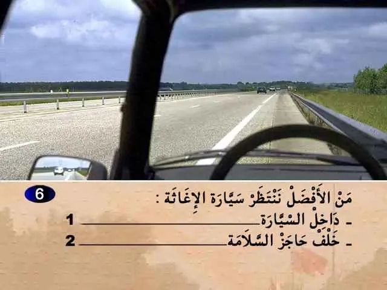
بيّن الجواب
الجواب الصحيح: 2
فحالة الطوارئ فالطريق السيار بحال عطب ولا مشكل صحي، خاصني نستنى سيارة الإغاثة ورا القضبان باش نكون آمن.
السؤال 7
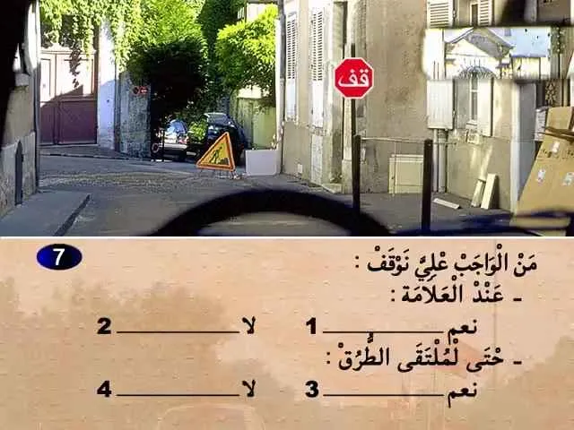
بيّن الجواب
الجواب الصحيح: 2 و 3
هنا كاينة علامة قف قبل ملتقى الطرق، باش تكون عندي رؤية واضحة خاصني نوقف عند ملتقى الطرق و ماشي عند العلامة.
السؤال 8
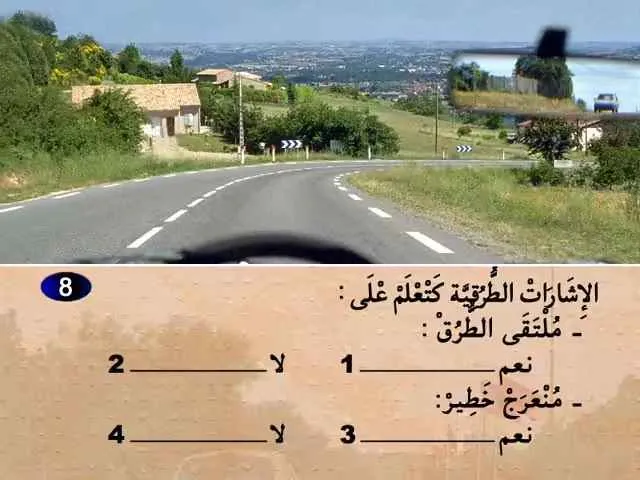
بيّن الجواب
الجواب الصحيح: 2 و 3
الإشارة اللي لونها حمر كتعني منعرج خطير.
السؤال 9
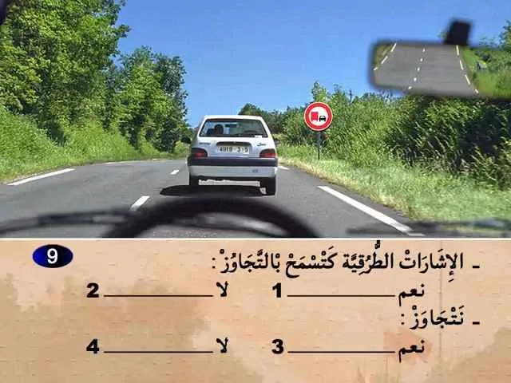
بيّن الجواب
الجواب الصحيح: 1 و 4
الخط المتقطع كيسمح لي نتجاوز، و العلامة كتخص الشاحنات، يعني ماكينش منع ديال التجاوز، ولكن ما يمكنش نتجاوز لأن الرؤية ماواضحاش.
السؤال 10
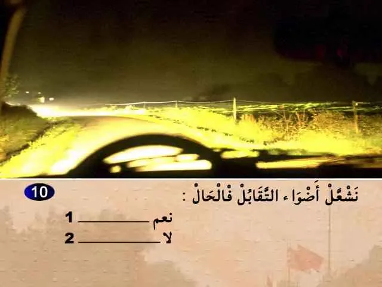
بيّن الجواب
الجواب الصحيح: 1
كاينة طوموبيل جاية خاصني ننحاز لليمين ونشعل أضواء التقابل.
السؤال 11
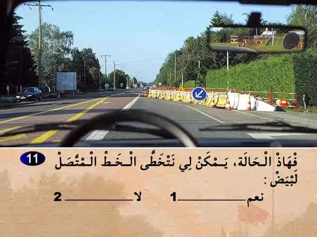
بيّن الجواب
الجواب الصحيح: 1
كاين أشغال و العلامة كتجبرني نبدل المسلك حيت الطريق مسدودة، اذن يمكن لي نتعدى الخط المتصل لأنه ماكينش خيار آخر.
السؤال 12
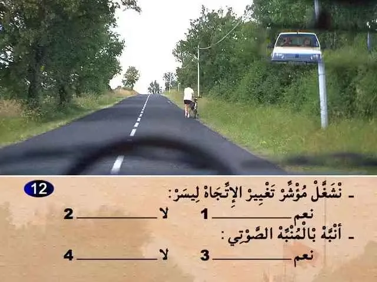
بيّن الجواب
الجواب الصحيح: 1 و 4
أثناء التجاوز ولا الانحياز خاصني نستعمل مؤشر تغيير الاتجاه، ما كاينش داعي للمنبه الصوتي إلا ما كانش خطر.
السؤال 13
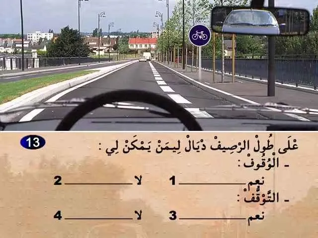
بيّن الجواب
الجواب الصحيح: 2 و 4
الأماكن الخاصة بحال ممر الدراجات أو مواقف ذوي الاحتياجات الخاصة أو الحافلات ما يمكنش نوقف فيهم.
السؤال 14
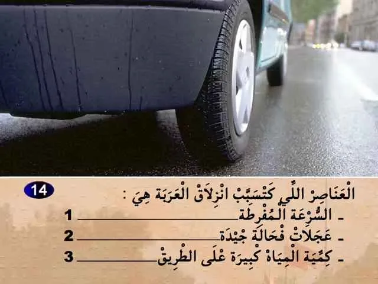
بيّن الجواب
الجواب الصحيح: 1 و 3
السرعة المفرطة والماء فالطريق كيسببوا في انزلاق العربة، الجواب الصحيح هو 1 و3.
السؤال 15
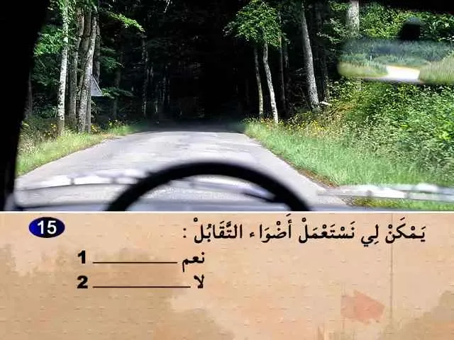
بيّن الجواب
الجواب الصحيح: 1
المكان مظلم خاض نستعمل أضواء التقابل.
السؤال 16
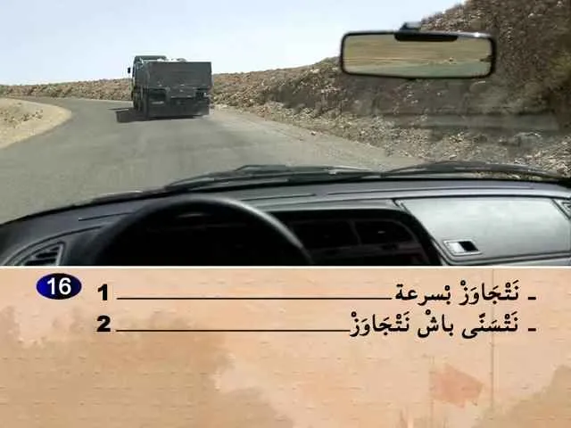
بيّن الجواب
الجواب الصحيح: 2
القانون ما كيسمحش ابدا بتجاوز بسرعة، الا بغيت نتجاوز خاص ناخد وقتي، في هاذ الحالة خاصني ننتظر لانه كاين منعرج.
السؤال 17
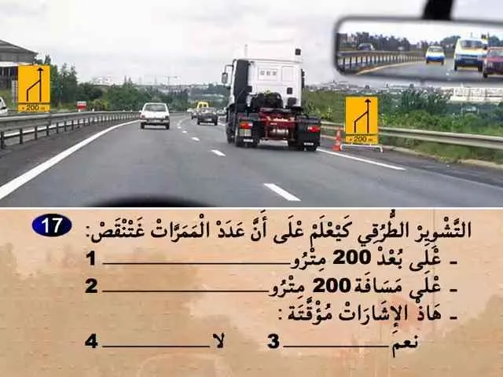
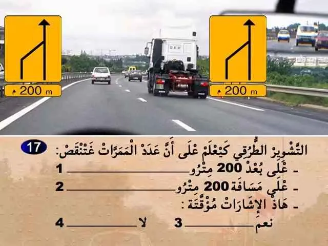
بيّن الجواب
الجواب الصحيح: 1 و 3
التشوير الطرقي كيقول باللي المسالك غتنقص على بعد 200 متر بسبب الأشغال، العلامة مؤقتة لأنها باللون الأصفر.
السؤال 18
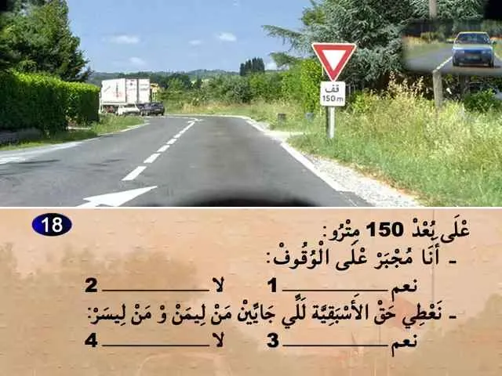
بيّن الجواب
الجواب الصحيح: 1 و 3
علامة الخطر كتقول باللي كاين خطر على بعد 150 متر (خارج المدينة)، خاصني نوقف ونعطي الأسبقية للعربات القادمة من اليمين واليسار.
السؤال 19
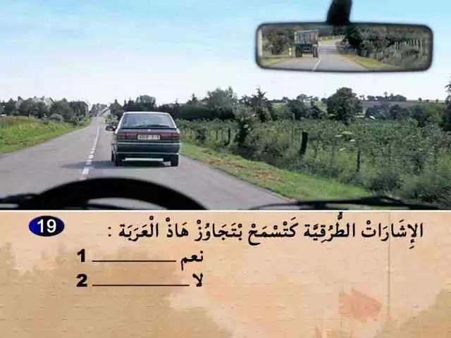
بيّن الجواب
الجواب الصحيح: 2
الخط المتقطع غادي يولي متصل، ما يمكنش لي نتجاوز دابا.
السؤال 20
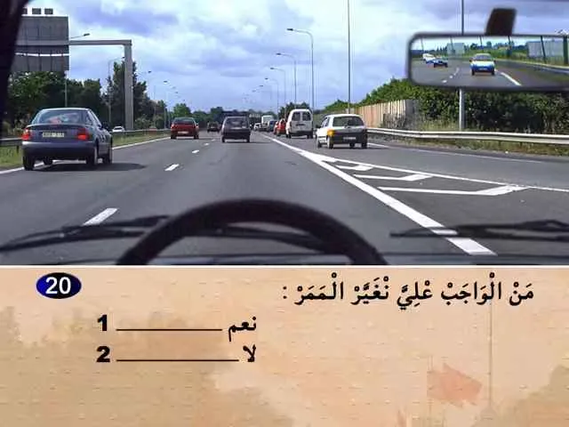
بيّن الجواب
الجواب الصحيح: 2
يمكن لي نبدل الممر ولكن ماشي واجب حيت أنا فالطريق العادي وما كاينش إشارة كتلزمني نبدل.
السؤال 21
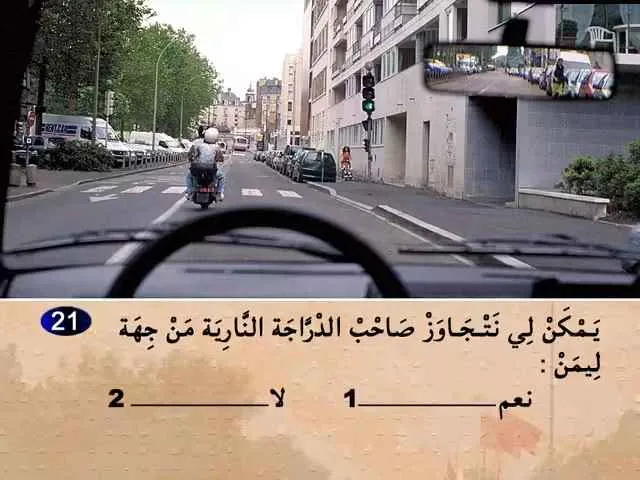
بيّن الجواب
الجواب الصحيح: 2
ما يمكنش لي نتجاوز من الجهة اليمنى إلا إذا كان صاحب العربة بغا يبدل الاتجاه لليسار.
السؤال 22
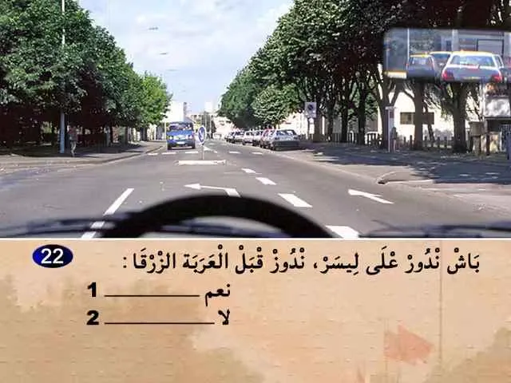
بيّن الجواب
الجواب الصحيح: 2
الأسبقية للعربات القادمة من اليمين، إذا بغيت ننعطف لليسار خاصني نخلي السيارة الزرقاء تمر.
السؤال 23
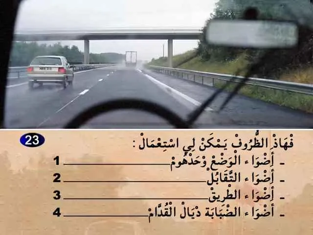
بيّن الجواب
الجواب الصحيح: 2 و 4
كاين الشتا، خاص نستعمل أضواء التقابل وأضواء الضباب الأمامية.
السؤال 24
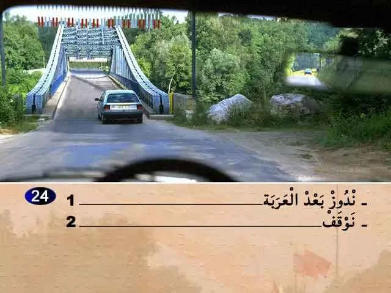
بيّن الجواب
الجواب الصحيح: 1
ما كايناش طوموبيل جاية فالقنطرة، يمكن لي نمر بعد العربة.
السؤال 25
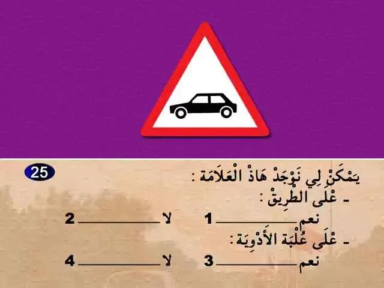
بيّن الجواب
الجواب الصحيح: 2 و 3
هاد العلامة كاينة فالأدوية كتقول ممنوع نسوق الطوموبيل وحنا واخدين هاد الدواء.
السؤال 26
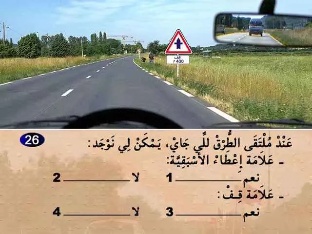
بيّن الجواب
الجواب الصحيح: 2 و 3
فملتقى الطرق الجاي، غادي نلقى علامة ديال الأسبقية وعلامة قف بعد 400 متر كيما كتبين العلامة التكميلية.
السؤال 27
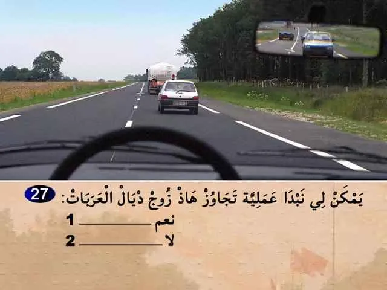
بيّن الجواب
الجواب الصحيح: 2
الطريق ذات اتجاهين، ما يمكنش نتجاوز جوج عربات في نفس الوقت، وكاينة أسهم الانحياز اللي كتمنع التجاوز.
السؤال 28
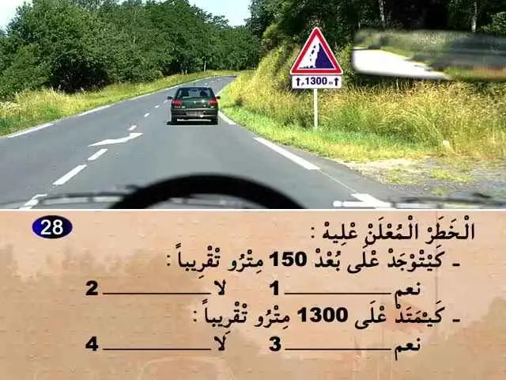
بيّن الجواب
الجواب الصحيح: 1 و 3
علامات الخطر خارج المدينة كتعلم على خطر كيتواجد على بعد 150 م، في هذه الحالة غادي نلقى خطر تساقط الأحجار.
السؤال 29
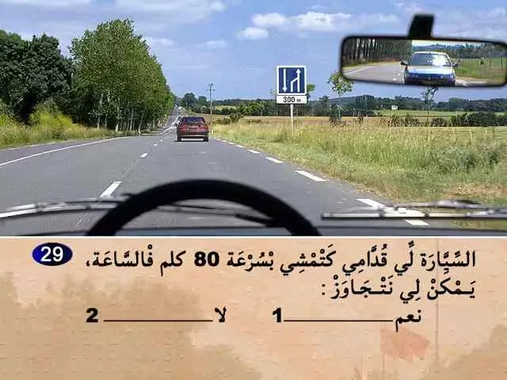
بيّن الجواب
الجواب الصحيح: 2
الطريق وطنية السرعة القصوى فيها 100 كلم/س و السيارة كتمشي ب 80 كلم/س يعني السرعة ليست مانع من التجاوز في هذه الحالة، لكن كاينة علامة طرقية كتشير لتقلص المسالك بعد 300 متر، يعني خاص ننتظر.
السؤال 30
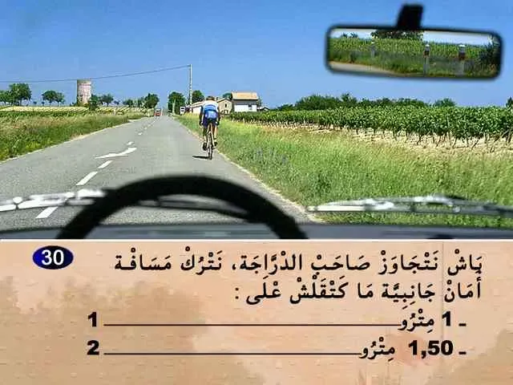
بيّن الجواب
الجواب الصحيح: 2
خارج المدينة، خاصني نخلي مسافة أمان جانبية لا تقل عن متر ونصف لتجاوز الدراجات.
السؤال 31
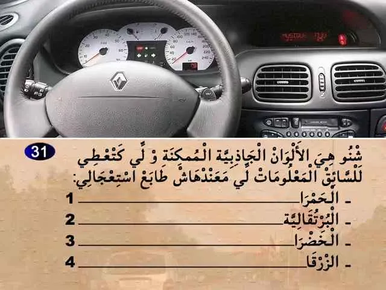
بيّن الجواب
الجواب الصحيح: 2 و 3 و 4
الألوان البرتقالية والخضراء والزرقاء تعطي معلومات غير مستعجلة، اللون الأحمر يشير إلى الخطر.
السؤال 32
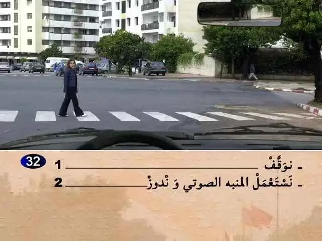
بيّن الجواب
الجواب الصحيح: 1
الراجلين فالممر الخاص بهم خاصني نوقف ونعطيهم الأسبقية، المنبه الصوتي ممنوع داخل المدينة إلا في حالة خطر.
السؤال 33
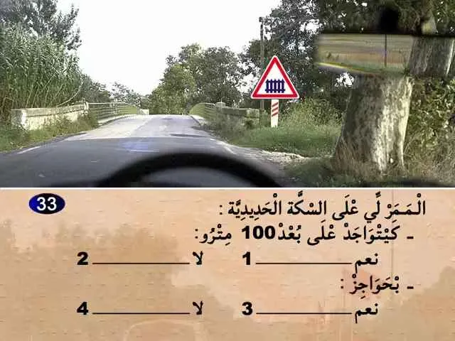
بيّن الجواب
الجواب الصحيح: 2 و 3
الخطوط تحت علامة الخطر تعني المسافة، كل خط كيساوي 50 متر، عندنا 3 خطوط يعني 150 متر، علامة السكة الحديدية بحواجز على بعد 150 متر.
السؤال 34
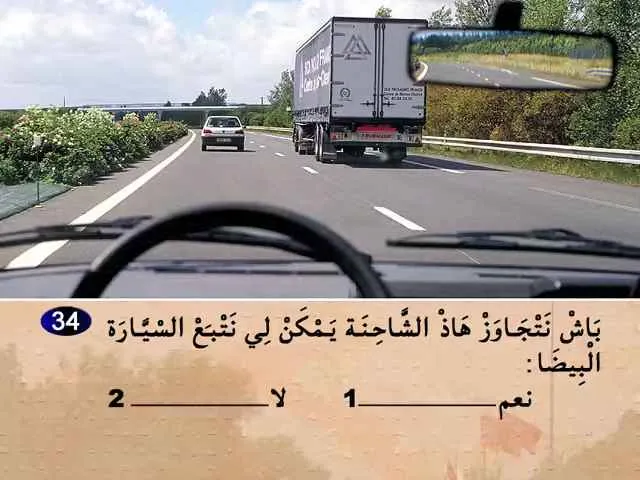
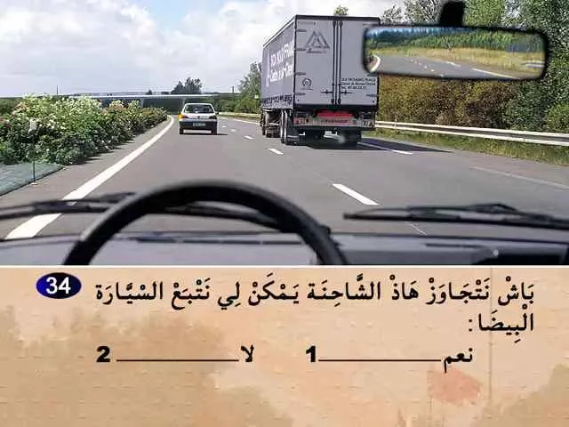
بيّن الجواب
الجواب الصحيح: 1
فطريق ذات اتجاه واحد (بحال الطريق السيار) يمكن لي نتجاوز الشاحنة حتى لو كاينة سيارة أخرى كتجاوزها.
السؤال 35
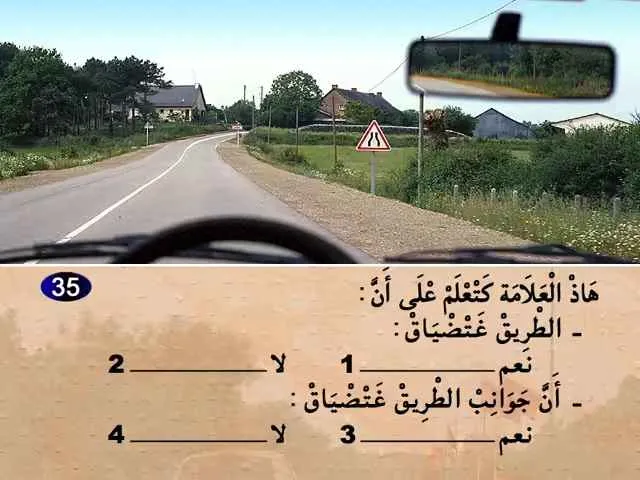
بيّن الجواب
الجواب الصحيح: 1 و 4
علامة الخطر كتقول باللي الطريق غادي تضيق على بعد 150 متر.
السؤال 36
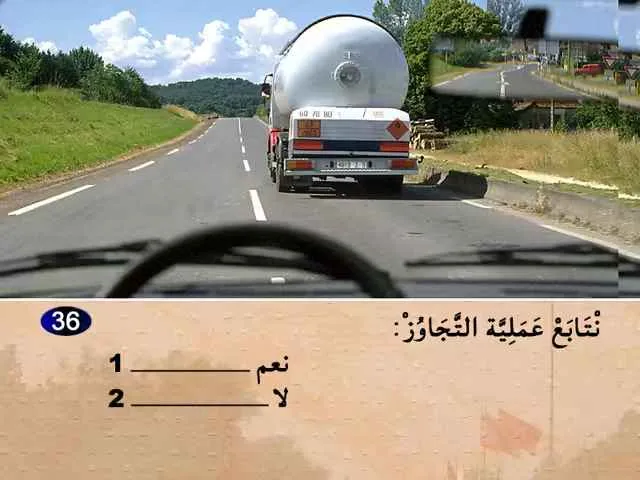
بيّن الجواب
الجواب الصحيح: 2
ما يمكنش نكمل التجاوز حيت الرؤية ما واضحاش، خاصني نرجع لمسلك السير العادي.
السؤال 37
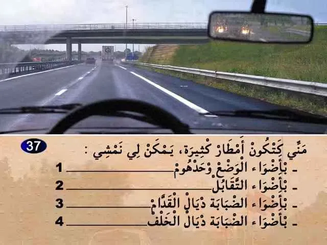
بيّن الجواب
الجواب الصحيح: 2 و 3
فالأمطار يمكن لي نستعمل أضواء التّقابل وأضواء الضباب الأمامية.
السؤال 38
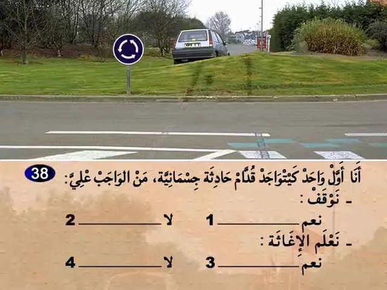
بيّن الجواب
الجواب الصحيح: 1 و 3
إذا كنت أول واحد في مكان الحادث، خاصني نوقف، نحمي المكان، نتصل بالإغاثة ونقدم المساعدة إذا كان ضروري.
السؤال 39
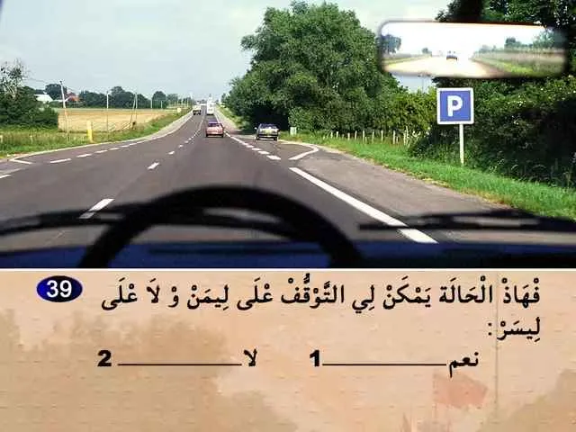
بيّن الجواب
الجواب الصحيح: 2
يمكن لي نوقف على الجهة اليمنى، لكن ما يمكنش نوقف على الجهة اليسرى حيت الطريق ذات اتجاهين.
السؤال 40
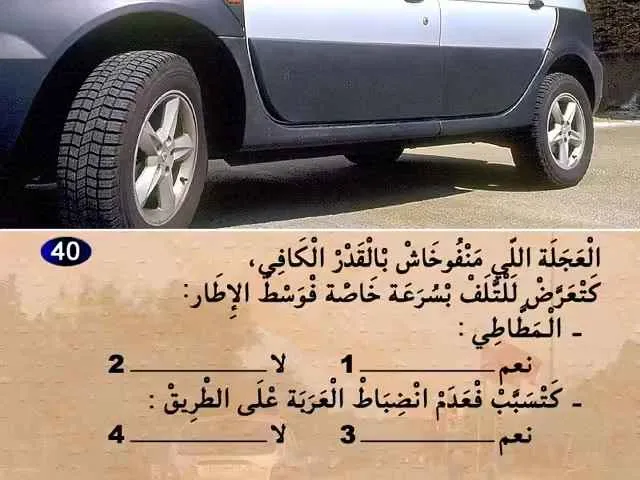
بيّن الجواب
الجواب الصحيح: 2 و 3
العجلة اللي ما مضغوطاش مزيان بالهواء كتصبر و مكتخسرش بسرعة، لكن كتسبب في عدم انضباط العربة على الطريق.